Doctor on Duty (3rd Edition)
Condensed system-by-system clinical reference guide. Complete with evidence-based diagnostics, stepwise emergency/inpatient management protocols, authentic Pakistani brand formularies, and clinical images for every single topic.
Chapter 17: General Surgery (29 Topics)
 CLINICAL APPROACH
pp. 409–414
CLINICAL APPROACH
pp. 409–414
Approach to the Management of Acute Abdomen
Systematic bedside evaluation of acute abdominal pain: SOCRATES history, review of systems, pain character, diagnostic g...
 ANATOMICAL MATRIX
p. 415
ANATOMICAL MATRIX
p. 415
Differential Diagnosis and Causes of Acute Abdomen
Master diagnostic differential matrix categorizing acute abdomen into gastrointestinal vs non-gastrointestinal causes ac...
 LABORATORY WORKUP
p. 416
LABORATORY WORKUP
p. 416
Diagnostic Approach of Acute Abdomen
Evidence-guided laboratory investigations for acute abdomen, test interpretations, sensitivity/specificity, and pre-test...
 IMAGING MODALITIES
p. 417
IMAGING MODALITIES
p. 417
Radiological Approach of Acute Abdomen
Selection criteria, sensitivity, specific signs, and diagnostic hierarchy for plain radiography, ultrasonography, contra...
 RESUSCITATION PROTOCOL
p. 418
RESUSCITATION PROTOCOL
p. 418
Stepwise Management of Acute Abdomen
11-step emergency resuscitation protocol: ABCD&E, venous access, goal-directed fluid resuscitation, analgesia, empiric a...
 HIGH YIELD SURGICAL EMERGENCY
p. 419
HIGH YIELD SURGICAL EMERGENCY
p. 419
Acute Appendicitis
Pathophysiology, classical periumbilical-to-RLQ pain migration, physical exam signs (McBurney, Rovsing, Psoas, Obturator...
 TOKYO GUIDELINES 2018
pp. 420–421
TOKYO GUIDELINES 2018
pp. 420–421
Acute Cholecystitis
Pathophysiology, 6 Fs risk factors, Murphy & Boas signs, Tokyo Guidelines diagnostic criteria and severity grading (Grad...
 CALCULOUS DISEASE
p. 422
CALCULOUS DISEASE
p. 422
Cholelithiasis (Gallstones)
Pathogenesis, types of gallstones (cholesterol vs black/brown pigment), biliary colic features, ultrasound acoustic shad...
 CBD CALCULI
p. 423
CBD CALCULI
p. 423
Choledocholithiasis
Common bile duct stones, cholestatic jaundice, MRCP vs ERCP diagnostics, laparoscopic bile duct exploration, and full an...
 LIFE-THREATENING EMERGENCY
pp. 424–425
LIFE-THREATENING EMERGENCY
pp. 424–425
Acute Cholangitis
Ascending biliary infection, Charcot's Triad, Reynolds' Pentad, Tokyo Guidelines diagnostic criteria and severity gradin...
 PROGNOSTIC SCORING & CRITICAL CARE
pp. 429–431
PROGNOSTIC SCORING & CRITICAL CARE
pp. 429–431
Acute Pancreatitis
I GET SMASHED etiologies, Revised Atlanta classification, CTSI/MCTSI scoring, Ranson and BISAP criteria, goal-directed f...
 PROCTOLOGY REFERENCE
p. 426
PROCTOLOGY REFERENCE
p. 426
Anal Fissure
Pathogenesis, posterior midline tears, severe pain on defecation, sentinel skin tag, conservative care, GTN/diltiazem ch...
 CLINICAL PROCTOLOGY
p. 427
CLINICAL PROCTOLOGY
p. 427
Hemorrhoids (Piles / بواسیر)
Internal vs external hemorrhoids, 1st to 4th degree classification, non-operative treatments (rubber band ligation, scle...
 SURGICAL SEPSIS
p. 428
SURGICAL SEPSIS
p. 428
Ano-Rectal Abscess
Cryptoglandular infection, anatomical classification (perianal, ischiorectal, submucous, pelvirectal), the fundamental r...
 SACROCOCCYGEAL PATHOLOGY
p. 428
SACROCOCCYGEAL PATHOLOGY
p. 428
Pilonidal Sinus
Acquired natal cleft disease, jeep disease, hair foreign body granuloma, acute abscess drainage, conservative shaving/hy...
 MECHANICAL GI CRISIS
p. 432
MECHANICAL GI CRISIS
p. 432
Intestinal (Bowel) Obstruction
Small vs large bowel obstruction, four cardinal symptoms, keyboard sign on ultrasound, air-fluid levels on X-ray, CT tra...
 HEPATOLOGY / SURGICAL INTERFACE
p. 433
HEPATOLOGY / SURGICAL INTERFACE
p. 433
Spontaneous Bacterial Peritonitis (SBP)
Pathogenesis in decompensated cirrhosis, subtle presentation, diagnostic paracentesis (PMN >= 250/mm3), critical IV albu...
 ACUTE SURGICAL PERITONEUM
p. 434
ACUTE SURGICAL PERITONEUM
p. 434
Secondary Bacterial Peritonitis
Peritoneal contamination from hollow viscus perforation, board-like abdominal rigidity, distinguishing criteria from SBP...
 TISSUE VIABILITY & WOUND CARE
pp. 435–436
TISSUE VIABILITY & WOUND CARE
pp. 435–436
Pressure Ulcer (Decubitus Ulcer / Bed Sore)
Pathogenesis (capillary occlusion pressure > 32 mmHg), neurological causes, anatomical predilection, NPUAP 4-stage class...
 LIMB PRESERVATION PROTOCOL
p. 437
LIMB PRESERVATION PROTOCOL
p. 437
Diabetic Foot Infections
Neuropathy and vasculopathy pathophysiology, IDSA/IWGDF severity grades (mild, moderate, severe), probe-to-bone test, de...
 SCAR MANAGEMENT
p. 438
SCAR MANAGEMENT
p. 438
Hypertrophic Scar
High fibroblast proliferation with parallel type III collagen, remaining strictly within original wound boundaries, sili...
 FIBROPROLIFERATIVE LESION
p. 439
FIBROPROLIFERATIVE LESION
p. 439
Keloids
Disorganized collagen deposition extending beyond wound margins, presternal triangle predilection, claw-like borders, si...
 BENIGN SUBCUTANEOUS TUMOR
p. 440
BENIGN SUBCUTANEOUS TUMOR
p. 440
Lipoma
Universal subcutaneous tumor, mature lobulated adipocytes, classical slipping sign, differential diagnosis with liposarc...
 MINOR CUTANEOUS LESION
p. 440
MINOR CUTANEOUS LESION
p. 440
Skin Tag (Acrochordon)
Small pedunculated fibroepithelial polyps in friction creases, metabolic syndrome and diabetes associations, differentia...
 HAND & WRIST PATHOLOGY
p. 441
HAND & WRIST PATHOLOGY
p. 441
Ganglion Cyst
Most common benign mass of hand/wrist, transillumination test, dorsal vs volar cysts (radial artery warning), conservati...
 PODIATRIC SURGERY
p. 442
PODIATRIC SURGERY
p. 442
Ingrown Toe-Nail (Onychocryptosis)
Pathogenesis (curved trimming), hallux predilection, foreign body granulation, conservative gutter splints, digital ring...
 DIGITAL CLOSED-SPACE SEPSIS
p. 442
DIGITAL CLOSED-SPACE SEPSIS
p. 442
Felon Finger Infection
Closed-space infection of the distal digital pulp, vertical fibrous septa, ischemic pulp necrosis risk, terminal phalanx...
 PERIUNGUAL SEPSIS
p. 443
PERIUNGUAL SEPSIS
p. 443
Acute Paronychia
Infection of proximal/lateral nail folds (< 6 weeks), S. aureus etiology, hangnail/manicure triggers, warm soaks, eponyc...
 OCCUPATIONAL INFLAMMATORY DERMATOSIS
pp. 443–444
OCCUPATIONAL INFLAMMATORY DERMATOSIS
pp. 443–444
Chronic Paronychia
Inflammatory dermatosis lasting > 6 weeks, wet work occupations (dishwashers, bartenders), cuticle loss, Candida as colo...
Chapter 18: Ophthalmology (12 Topics)
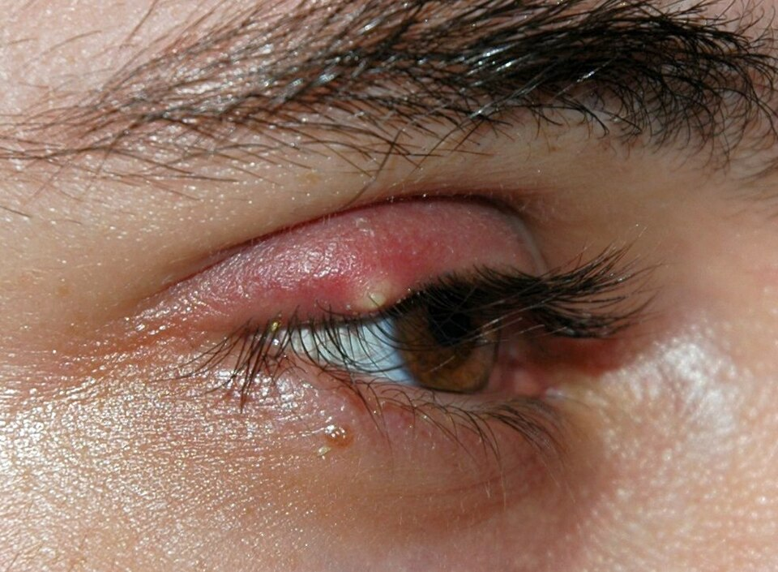
OPHTHALMIC INFECTION pp. 444–445Hordeolum (Stye) & Chalazion (Meibomian Cyst)
Acute localized staphylococcal abscess of eyelid glands (Zeis/Moll/Meibomian) vs chronic non-infectious lipogranuloma of...
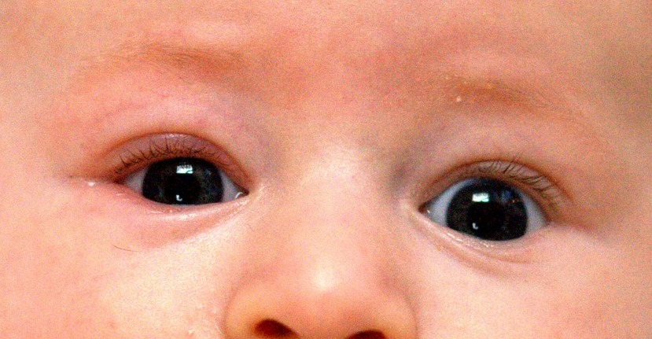
LID MARGIN DISEASE pp. 446–447Blepharitis (Anterior & Posterior MGD)
Chronic inflammatory condition of the eyelid margins divided into anterior (staphylococcal/seborrheic) and posterior (me...
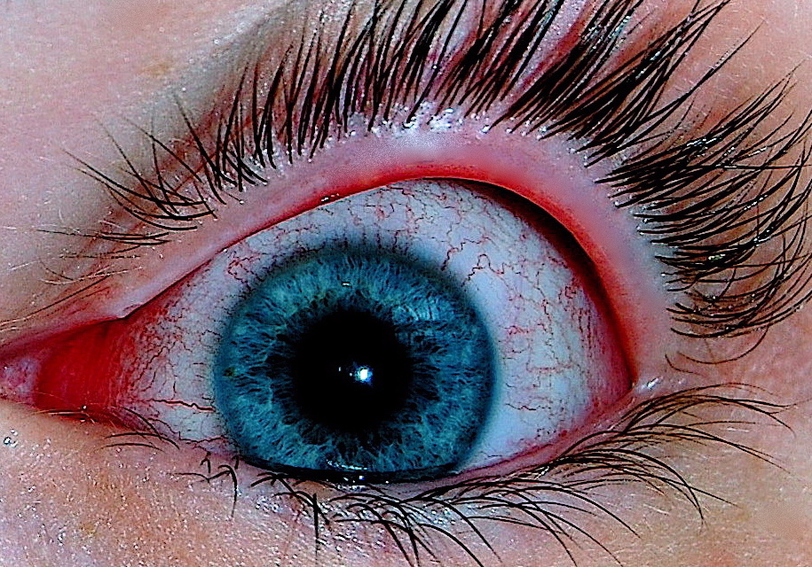
RED EYE EMERGENCY p. 448Acute Bacterial Conjunctivitis
Acute onset ocular redness with copious mucopurulent discharge and matting of eyelids; causative organisms (S. aureus, S...
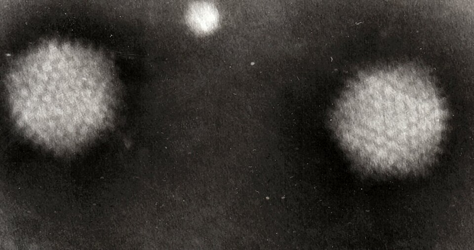
HIGHLY CONTAGIOUS p. 449Viral Conjunctivitis (Epidemic Keratoconjunctivitis)
Highly communicable adenoviral infection presenting with watery serous discharge, prominent palpebral conjunctival folli...
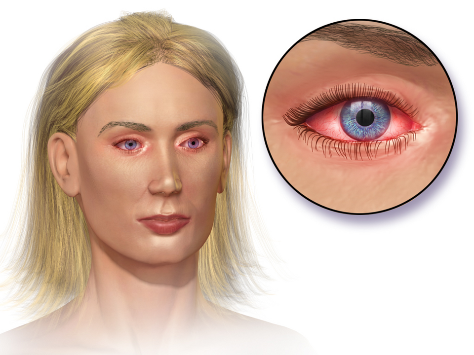
HYPERSENSITIVITY p. 450Allergic Conjunctivitis & Vernal Keratoconjunctivitis
Type I IgE-mediated ocular hypersensitivity ranging from seasonal allergic conjunctivitis to severe vernal keratoconjunc...
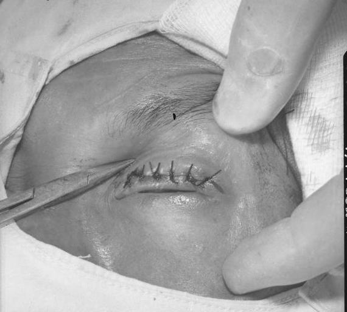
SYSTEMIC STI & ENDEMIC p. 451Chlamydial Conjunctivitis & Trachoma
Adult inclusion conjunctivitis (Chlamydia trachomatis serovars D–K) sexually transmitted ocular infection vs endemic tra...
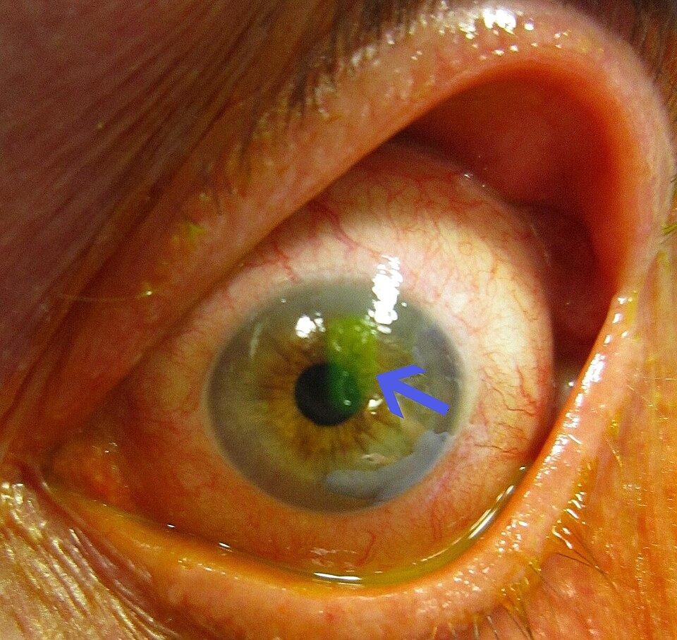
TRAUMA & FLUORESCEIN p. 452Corneal Abrasion & Traumatic Epithelial Defect
Mechanical disruption of corneal epithelium; extreme pain, photophobia, blepharospasm, diagnosis via slit-lamp fluoresce...
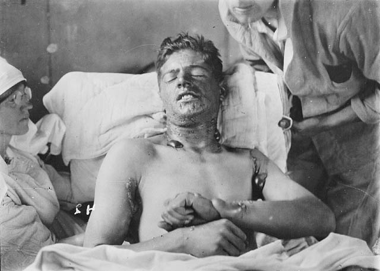
IMMEDIATE RESUSCITATION p. 453Ocular Chemical Burns (Acid vs Alkali Emergency)
True ophthalmic emergency requiring immediate copius lavage prior to history or examination; alkali (liquefactive necros...
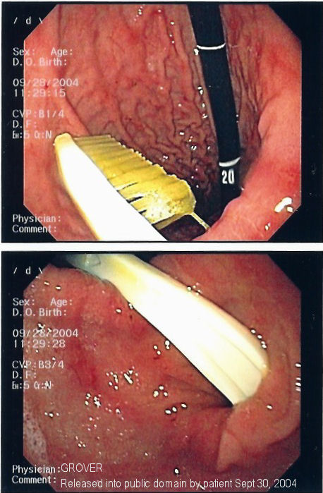
MINOR PROCEDURE p. 454Corneal & Subtarsal Foreign Bodies
Evaluation and safe removal of superficial metallic, organic, and mineral corneal foreign bodies; subtarsal lid eversion...
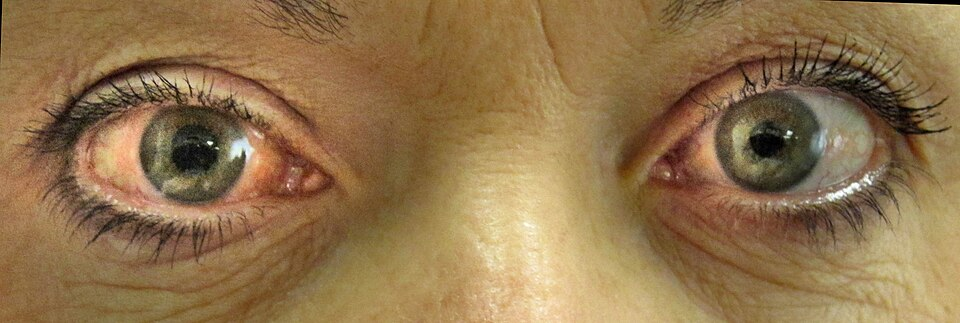
SIGHT-THREATENING EMERGENCY pp. 454–456Acute Angle-Closure Glaucoma (AACG Emergency)
Ophthalmic hyper-emergency caused by pupillary block and acute occlusion of the iridocorneal drainage angle; sudden seve...
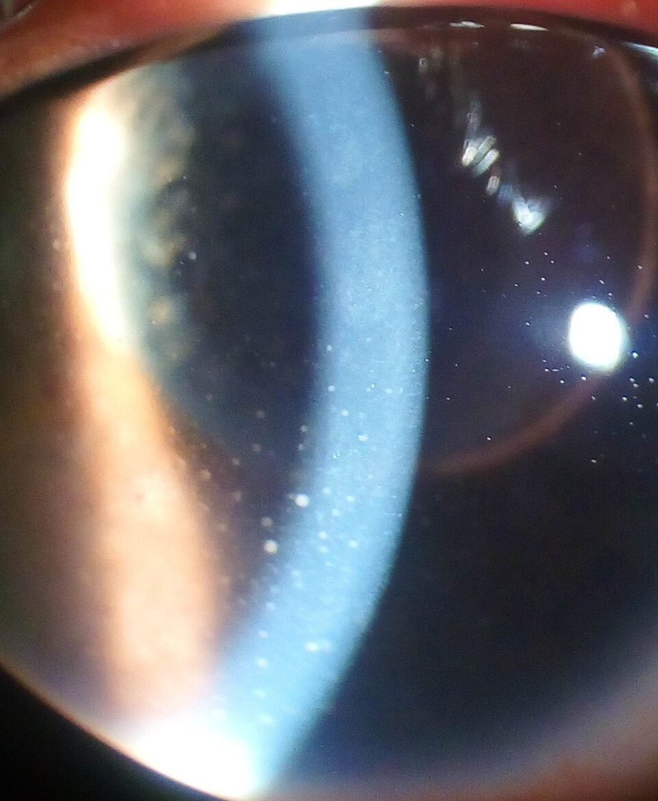
SYSTEMIC AUTOIMMUNE p. 457Anterior Uveitis (Acute Iritis)
Inflammation of the iris and anterior ciliary body; deep aching ocular pain, photophobia, circumcorneal ciliary injectio...
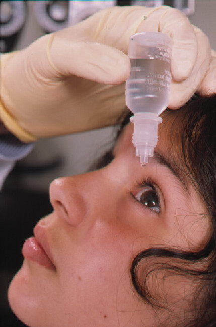
MASTER REFERENCE TABLE p. 458Comprehensive Ophthalmic Drug Formulary & Eye Drops
Master clinical reference directory of all ophthalmic classes, formulations, and authentic Pakistani brand names: topica...
Chapter 19: Ear, Nose & Throat (ENT) (12 Topics)
 CHRONIC INFLAMMATORY
pp. 459–463
CHRONIC INFLAMMATORY
pp. 459–463
Chronic Rhinosinusitis (CRS with/without Polyps)
Sinonasal inflammation persisting > 12 weeks; cardinal criteria (nasal obstruction, facial pressure/fullness, mucopurule...
 STRUCTURAL OBSTRUCTION
pp. 464–466
STRUCTURAL OBSTRUCTION
pp. 464–466
Deviated Nasal Septum (DNS) & Turbinate Hypertrophy
Anatomical deviation of the osseocartilaginous nasal septum producing unilateral or bilateral airflow resistance; Cottle...
 ENT EMERGENCY
pp. 467–468
ENT EMERGENCY
pp. 467–468
Epistaxis (Anterior vs Posterior Nasal Bleeding)
Acute nasal hemorrhage differentiated into anterior (Little's area / Kiesselbach's plexus - 90%) vs posterior (Woodruff'...
 STREPTOCOCCAL INFECTION
pp. 469–470
STREPTOCOCCAL INFECTION
pp. 469–470
Acute Tonsillitis & Pharyngitis (Centor Score)
Acute pharyngeal and palatine tonsillar infection; differentiating viral etiologies from Group A Beta-Hemolytic Streptoc...
 DEEP NECK INFECTION
p. 471
DEEP NECK INFECTION
p. 471
Peritonsillar Abscess (Quinsy)
Suppurative purulent collection in the peritonsillar space between tonsillar capsule and superior constrictor muscle; se...
 MIDDLE EAR SEPSIS
pp. 472–473
MIDDLE EAR SEPSIS
pp. 472–473
Acute Otitis Media (AOM)
Acute bacterial infection of the middle ear cleft following Eustachian tube dysfunction; severe otalgia, fever, distinct...
 CHRONIC OTOLOGY
pp. 474–475
CHRONIC OTOLOGY
pp. 474–475
CSOM: Tubotympanic (Safe) vs Atticoantral (Unsafe)
Longstanding chronic inflammation of the middle ear and mastoid cavity with recurrent otorrhea (> 2–6 weeks) through a p...
 FUNGAL INFECTION
p. 476
FUNGAL INFECTION
p. 476
Otomycosis (Fungal Otitis Externa)
Superficial fungal infection of the external auditory canal; characteristic intense pruritus, pathognomonic 'wet blottin...
 SEVERE TRAGAL TENDERNESS
p. 477
SEVERE TRAGAL TENDERNESS
p. 477
Diffuse Otitis Externa & Malignant Otitis Externa
Diffuse acute inflammation of the external auditory canal skin (Swimmer's Ear); exquisite tragal pain, canal stenosis, P...
 REPOSITIONING MANEUVER
pp. 478–480
REPOSITIONING MANEUVER
pp. 478–480
BPPV: Benign Paroxysmal Positional Vertigo & Epley
Most common peripheral vestibular cause of vertigo; canalithiasis of the posterior semicircular canal, brief violent rot...
 FLUCTUATING HEARING LOSS
p. 481
FLUCTUATING HEARING LOSS
p. 481
Ménière's Disease (Endolymphatic Hydrops)
Inner ear disorder characterized by endolymphatic hydrops; diagnostic tetrad (spontaneous episodic vertigo lasting 20 mi...
 LMN FACIAL PARALYSIS
p. 482
LMN FACIAL PARALYSIS
p. 482
Bell's Palsy (Acute Lower Motor Neuron Facial Paralysis)
Acute idiopathic unilateral lower motor neuron facial nerve (CN VII) palsy; distinguishing LMN from UMN stroke via foreh...
Chapter 23: Emergency Medicine & Poisoning (9 Topics)
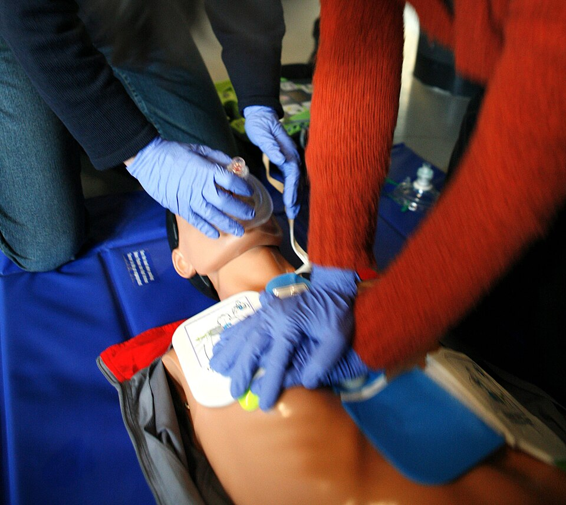
LIFE SUPPORT pp. 673–676ACLS Cardiac Arrest Algorithm & Resuscitation
Advanced Cardiovascular Life Support (ACLS) algorithmic management of adult cardiac arrest; shockable (VF / pVT) vs non-...
Anaphylaxis Emergency Management & Adrenaline Protocol
Severe, sudden-onset multi-system type-I hypersensitivity reaction; airway compromise, bronchospasm, distributive shock,...
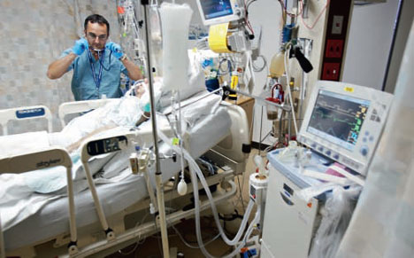
CRITICAL CARE pp. 681–685Sepsis & Septic Shock (Surviving Sepsis Hour-1 Bundle)
Life-threatening organ dysfunction caused by a dysregulated host response to infection (Sepsis-3); bedside qSOFA screeni...
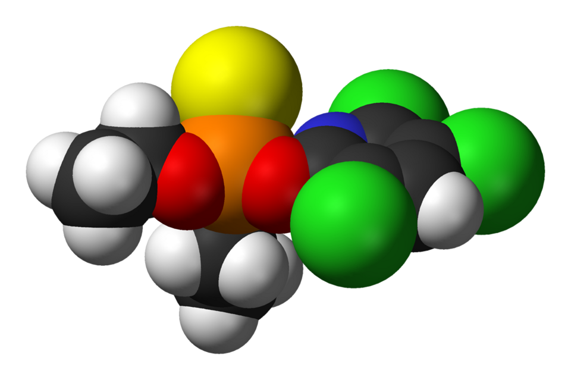
AGRICULTURAL POISONING pp. 686–690Organophosphate & Carbamate Poisoning (Atropinization)
Irreversible acetylcholinesterase inhibition leading to massive acetylcholine storm; DUMBELS / SLUDGEM cholinergic toxid...
Paracetamol Toxicity & N-Acetylcysteine (NAC Protocol)
Dose-dependent toxic metabolite (NAPQI) accumulation depleting hepatic glutathione; Rumack-Matthew treatment nomogram, 4...
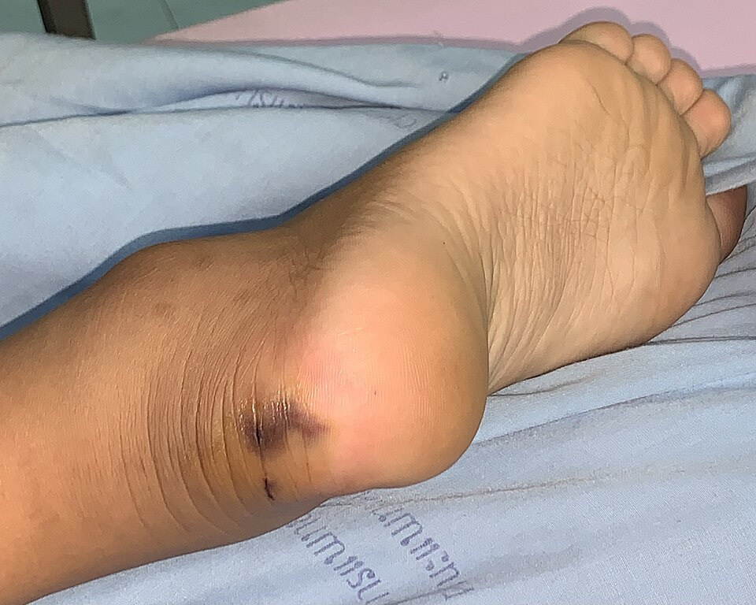
ENVENOMATION PROTOCOL pp. 695–698Snake Bite Envenomation (ASV & 20WBCT Protocol)
Emergency management of venomous snakebites in Pakistan; distinguishing Vasculotoxic/Hemotoxic (Viperidae: Russell's & S...
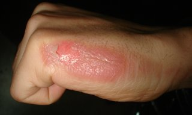
BURN RESUSCITATION pp. 699–702Thermal Burn Injury & Parkland Fluid Resuscitation
Acute major burn resuscitation; Wallace Rule of Nines Total Body Surface Area (TBSA) calculation, Parkland crystalloid f...
General Approach to the Poisoned Patient (Toxidromes)
Master diagnostic matrix of acute clinical toxidromes (Anticholinergic, Cholinergic, Sympathomimetic, Sedative-Hypnotic,...
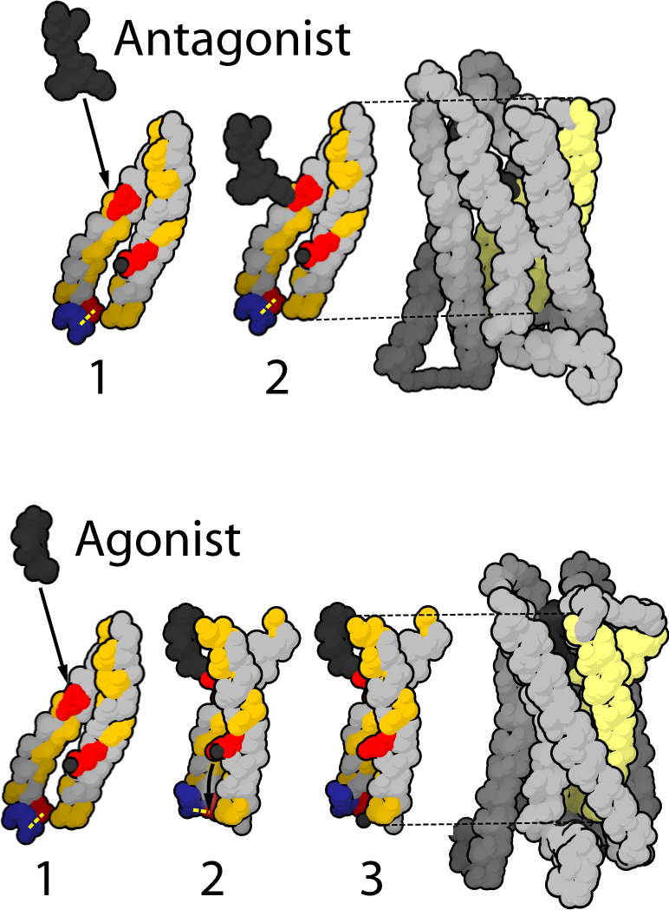
ANALGESIA PROTOCOL pp. 708–712Emergency Acute Pain Management & WHO Ladder
Systematic acute pain assessment using Visual Analog Scale (VAS); WHO 3-step analgesic ladder adapted for acute emergenc...
Doctor on Duty Master System Roadmap
Full system-by-system chapters of Doctor on Duty (3rd Edition, 695 pages):